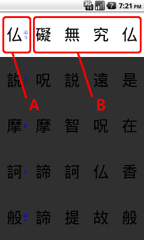

Figure2

Thank you, I have downloaded the "4 Choice Heart Sutra" of Yojiokisoft, Thank you very much.
This application was developed on the basis of objective and that Let's remember while you are playing the game the Heart Sutra.
When you start the game, Heart Sutra is displayed vertically on the screen (Figure1-A).Four characters will be displayed next to it (Figure1-B).
Figure1
It is a game that will continue to tap to find the correct character from the character of these four.
There are four levels of speed Heart Sutra can be read on (Slow, Normal, Fast, At one's own pace), It can be adjusted by setting. (I'm getting my own pace immediately after installation)
The following items can be adjusted in the Settings screen. Please adjust by preference.
It becomes a practice mode when I checked, big button blue moon appears only one (Figure2).
Figure2
There is no need to look for a character from among the four characters, I just tap the large button simply. It can be used and seize the sense of rhythm, when (at your own pace or) recite the sutra to the rhythm.
I set the speed at which the (Part of white background) will proceed cursor. Set of four steps Slow, Normal, Fast, and By oneself are possible. If you select "By oneself", the cursor does not proceed automatically, the cursor will advance by tapping.
When will the (right-handed) right, to the right, four choices are displayed on the left side is Heart Sutra (phonetic) with (Figure3).
Figure3
When will the (left-handed) left, to the left, four choices are displayed on the right side is Heart Sutra (phonetic) with (Figure4).
Figure4
You can set the sound of sideshow or something such as bing Khan entering while you are chanting sutras. Please adjust by preference because there is a lot of sound. Of course, it is also possible to not issue a sound.
You can set the sound when you tap the button. Please adjust by preference because there is a lot of sound. Of course, it is also possible to not issue a sound.
Figure5

Heart Sutra is displayed.If the button for the filter screen is left-handed, it is displayed on the right side.
You pause and then tap this part during the game.
Four characters will be displayed.Because there is the same letter as the Heart Sutra, which is displayed on the left side only one in this, Please looking for.Proceed to the next character and tap any of the four.
Part of the white background is the current reading position.
Proceed to the next character in a certain period of time or automatic tap, when you passed.
To return to the top if you go to the bottom.
*In the case of "By oneself", the read speed of the configuration screen does not go to the next character until you tap.
Game begins when you tap the first letter of the.
To pause the tap (phonetic characters are and swept, Figure5-A) the line of Heart Sutra (Figure6).
Figure6
To resume, tap the "Resume" button, and press the key to return the Android.
If you choose to "Start from th beginning", to return to the (first character) first game.
If you choose to "Return to the opening screen", to return to the opening screen immediately after the start.
If you select the "End of the game", and then exit the application.
The Heart Sutra, there are 278 characters in total.
It is the end of the game when I push forward reading to 278 character of the last (Figure7).
Figure7

Score appears at the bottom of was cheers for good work.
The Level, Buddha typical will be displayed according to the score. Those who issued the Shaka-nyorai of highest rank, who of God is exactly level you transcend the human.
OK The number of correct, NG is the number of mistakes, SK is the amount skipped without can tap within a certain period of time, TM represents the time (in seconds) it took.
If you select the "Replay" to play the game again.
If you choose to "Return to the opening screen", to return to the opening screen immediately after the start.
If you select the "End of the game", and then exit the application.
The timing to cast
At first, I think whether puzzled to do for chanting at any timing cursor will proceed on its own. We are optimized to get cast in the following manner.
(1)Look at the character of the part of the white cursor, and then figure out how do I cast what. (It is not uttered at this point yet)
(2)Next, Say it out loud actually.At the same time I tap the screen. (The cursor will continue)
(3)Go back to (1), and repeat.
Short, instead of cast at the moment when it became white, and cast when the cursor moves next.
The timing you cast it, I was allowed to reference the video of Prajna-paramita Hrdaya Sutram in the All Japan Soto Young Priests Association.
The Heart Sutra, it is being preached the essence of Mahayana Buddhism, and appreciate sutra.
But, I do not know what sense at all times even after reading.
What recite without a sense, what you do not know the meaning, meaning me?
I wanted to know the meaning, I read a variety of interpretations of various people, but not really realize.
Among them, you may want to link this video I was able to understand and as I made.